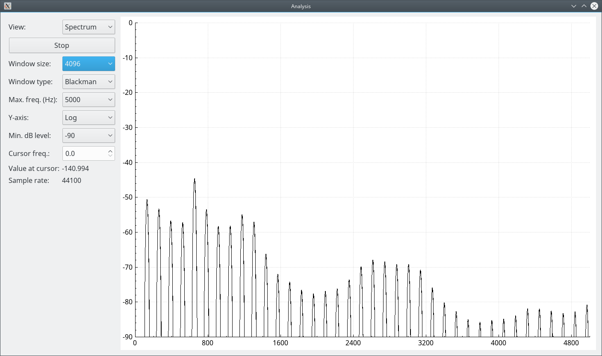

Interactive vocal tract model - analysis

This is a simple spectrum/signal viewer. External spectrum viewers can be connected through JACK.
Operations:
- Change the view:
Select "Spectrum" to view the spectrum, and "Signal" to see the time domain waveform. - Start/stop the viewer:
Click on "Start" or "Stop". - Change the parameters of the spectrum:
Select the window size and window type. - Select the maximum frequency of the spectrum:
The graph will show from 0 Hz to the selected frequency. - Select the y-axis scale for the spectrum:
Select "Linear" or "Log". - Select the y scale limits:
Select the minimum dB level. The graph will show from to the select level to 0 dB, if the y-axis is logarithmic. - Change the cursor:
Set the frequency in the text input or click on the up/down arrows. The cursor will be indicated by a blue vertical line in the graph. The cursor only appears on the spetrum.